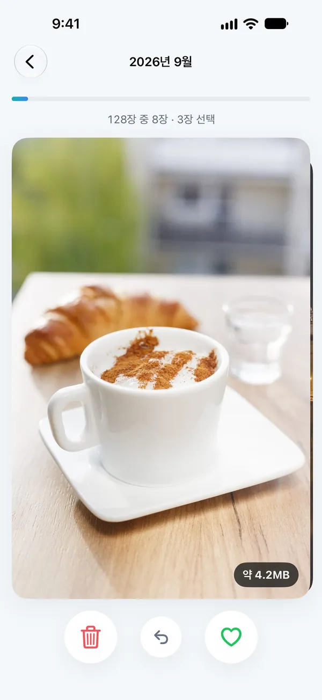
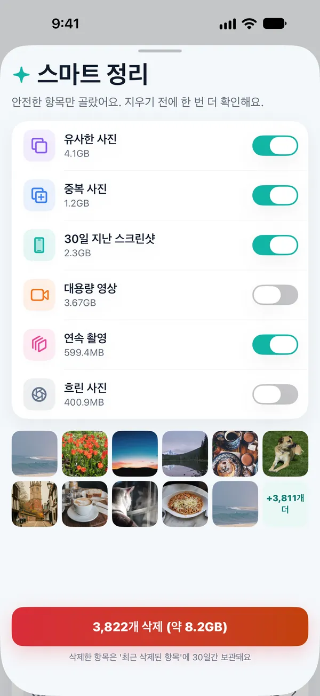
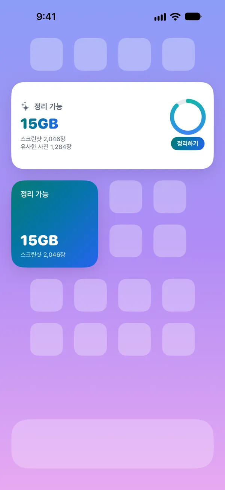
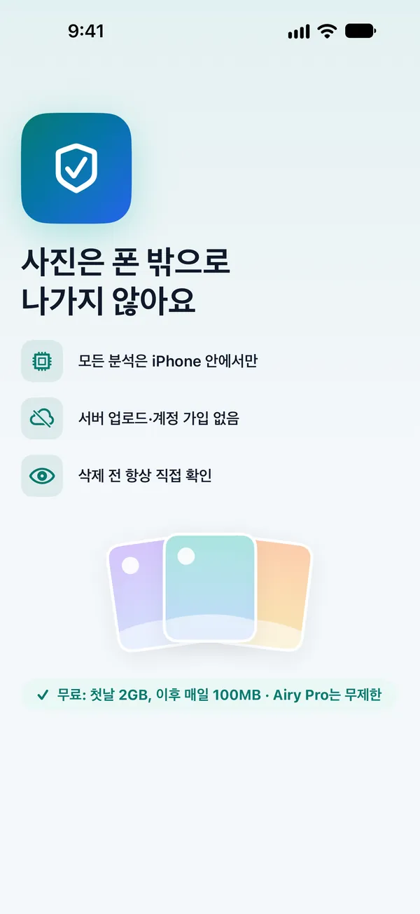

아이폰 용량,
사진부터 비워요
비슷한 사진, 대용량 영상, 쌓인 스크린샷을 찾아 보여드려요. 무엇을 지울지는 언제나 직접 고르고, 사진은 iPhone 밖으로 나가지 않아요.
연사·거의 같은 컷 묶기
큰 순서로 한눈에
오래된 것부터 정리
받은 사진 따로 모아 보기
추천은 Airy가,
선택은 내가
몇 초 사이에 연달아 찍은 거의 같은 사진을 묶고, 가장 선명한 한 장을 추천해요. 마음에 들지 않으면 다른 사진을 남기면 돼요.
- 그룹마다 "베스트만 남기기" 버튼으로 정리
- 즐겨찾기·보호 앨범 사진은 후보에서 제외

넘기기만 하면
정리 끝
월별로 사진을 한 장씩 넘기며 왼쪽은 삭제, 오른쪽은 남기기. 실수했다면 바로 되돌릴 수 있어요.
- 사진마다 차지하는 용량 표시
- 중간에 멈춰도 그 자리부터 이어서
고른 것만,
한 번 더 확인
안전한 항목만 골라 목록으로 보여드려요. 켜고 끄며 정한 뒤, 지우기 전에 한 번 더 확인하고, iOS 확인창에서 마지막으로 승인해요.
- 삭제한 사진은 '최근 삭제된 항목'에 30일간 보관
- 3초 안에 되돌리기 가능


남은 용량을
홈 화면에서 바로
정리할 수 있는 용량을 위젯으로 확인하고, 필요할 때 바로 열어요. 제어 센터와 단축어도 지원해요.
세 단계면 충분해요
사진 접근 허용
분석은 모두 iPhone 안에서 이뤄져요. 처음 한 번 훑어보는 데 잠깐 걸려요.
추천 확인
비슷한 사진, 큰 영상, 오래된 스크린샷을 카테고리별로 보여드려요.
직접 골라 정리
남길 것과 지울 것을 고르고, iOS 확인창에서 승인하면 끝이에요.
사진은 폰 밖으로
나가지 않아요
Airy는 서버가 없어요. 사진을 업로드하지 않고, 계정도 만들지 않고, 광고나 추적 도구도 넣지 않았어요.
Apple의 Vision으로 iPhone 안에서 비교해요.
App Store 개인정보 라벨: 데이터 수집 안 함.
Airy가 혼자 지우는 일은 없어요.
지운 사진은 '최근 삭제된 항목'에 30일간 남아요.

무료로 시작하고,
필요할 때만 Pro
첫날은 2GB까지, 그 뒤로는 매일 100MB까지 무료로 정리할 수 있어요.
무료
- 모든 기능 둘러보기
- 스와이프·유사 사진 정리
- 위젯
Airy Pro 연간
- 용량 제한 없이 정리
- 모든 카테고리·스마트 정리
- 언제든 해지
Airy Pro 평생
- Pro 기능 평생 이용
- 갱신 결제 없음
구독은 기간이 끝나기 24시간 전까지 해지하지 않으면 자동으로 갱신돼요. 해지는 설정 › [내 이름] › 구독에서 할 수 있어요. 앱 안에서 주간 요금제(₩4,400)도 선택할 수 있어요. 가격은 국가별로 다를 수 있어요.
궁금한 점
지웠는데 용량이 바로 늘지 않아요.
iOS는 지운 사진을 '최근 삭제된 항목'에 30일간 보관해요. 바로 공간을 확보하려면 사진 앱 › 앨범 › 최근 삭제된 항목에서 비우기를 눌러 주세요.
Airy가 제 사진을 마음대로 지울 수 있나요?
아니요. 모든 삭제는 Review 화면 확인, 3초 되돌리기, iOS 확인창 승인을 거쳐야 해요. 위젯과 단축어는 화면을 열 뿐 아무것도 지우지 않아요.
사진이 서버로 전송되나요?
아니요. Airy에는 서버가 없어요. 비교와 분석은 모두 iPhone 안에서 이뤄져요.
iCloud 사진을 쓰고 있어요.
iCloud 사진을 켜 두었다면 iPhone에서 지운 사진은 같은 Apple 계정의 다른 기기에서도 지워져요. 처음 정리할 때 앱에서 한 번 더 안내해요.
무료 사용량은 어떻게 계산되나요?
처음 정리하는 날은 2GB까지, 그다음 날부터는 매일 100MB까지 무료예요. 자정에 다시 채워져요.
구독은 어떻게 해지하나요?
설정 › [내 이름] › 구독 › Airy에서 해지할 수 있어요. 무료 체험 중에 해지하면 요금이 청구되지 않아요.
가볍게, Airy
곧 App Store에서 만나요.